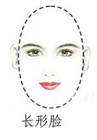
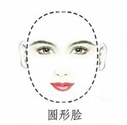
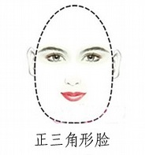
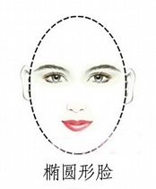
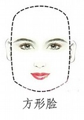

不同臉型的化妝技巧，學會了會更自信一點！
每個人從一出生臉型就是沒法改變的，對於不同的臉型，可以採用不同臉型的化妝技巧，找對臉型畫出適合你的妝容，讓你更添自信。
下面來教大家針對不同臉型的化妝技巧：

【長臉型化妝技巧】長臉型應該採用化妝來增加面部寬闊感。
眉毛：位置不可太高而有角，眉毛不應高翹。可化平直一點。 胭脂：抹在顴骨的最高處與太陽穴下方所構成的曲線部位，前端距離鼻子要遠些。 嘴唇：唇峰要平，下唇塗得可豐滿些。兩頰下陷窄小者，宜在後兩部位敷淡色粉底成光影，使其顯得較為豐滿。 發式：可採用七比三或更偏頭的頭路，這樣可使臉看起來寬些，髮型以往下覆著及兩邊有捲發較為合適，這樣可增加面部兩旁的發量，使臉部顯得寬一些。
【圓臉型化妝技巧】圓臉型是屬於可愛型的臉型，要修飾成理想的橢圓形並不困難。
眉毛：不可平直和起角，但也不可太彎，應為自然的弧形和帶有少許彎曲。標準眉最為合適。 胭脂：塗法是從顴骨一直延伸到下顎部，必要時可利用暗 色粉底作成陰影。 嘴唇：部分上唇化成闊而淺的弓形，均勻塗成圓形小觜。 發式：以6：4的比例來分頭路，這樣可使臉不顯得那麼圓，兩側要平伏一點，若有劉海的，則必須弄後些，並且要有波浪。
【正三角臉型化妝技巧】三角臉型即額部較窄而兩鰓大，顯得上小下闊，此類臉形的化妝秘訣跟圓臉、四方臉差不多。
眉毛：宜保持原狀態。 胭脂：由眼尾外方向塗抹，對於兩腮可用較深的粉底來掩飾。 嘴唇：唇角稍向上翹。 發式：頭髮以七比三來偏分，使額部看起來闊，髮型以波浪或捲髮增加頭型上部的飽滿。
【橢圓臉型化妝技巧】橢圓臉型是最理想的臉型，所以要盡量保持其完整，這一臉型的化妝要著重自然不要有所掩飾。
眉毛：搭配標準眉型，眉頭與內眼角垂直，眉頭眉尾在一條水平線上，眉峰在眉毛的2/3處。 嘴唇：依自己的唇型塗成最自然的樣子，除非自己的嘴唇過大或過小。 發式：採用中分頭，左右均衡的髮型最為理想。
【方形臉型化妝技巧】方形臉型化妝時要注意增加柔和感，以掩飾臉上的方角，這種臉型的人，兩邊的顴骨很突出，因此要設法以掩飾。
眉毛：眉毛要稍微闊而微彎，不可有角。 胭脂：不妨暈染得豐滿一些，可用暗色粉底來改變面部輪廓。 發式：頭髮四六分或中分都可，偏分時，側髮型可造成不平衡的感覺。
